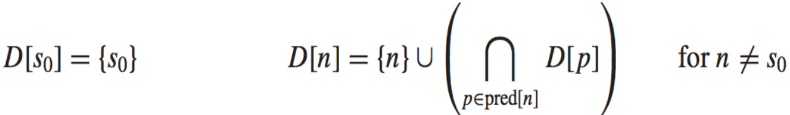
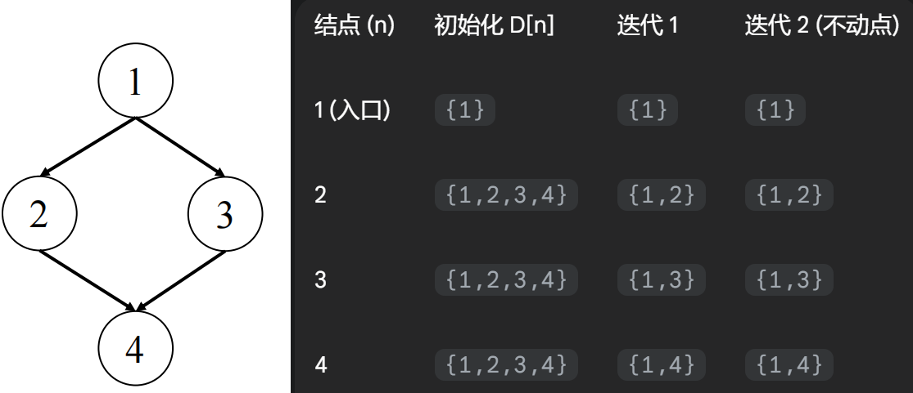
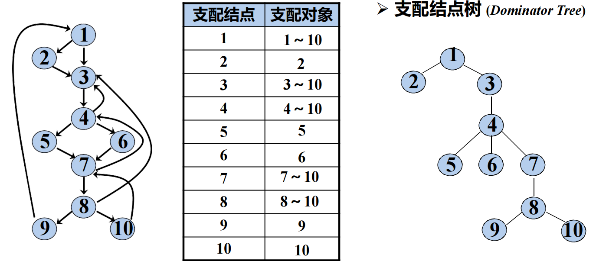
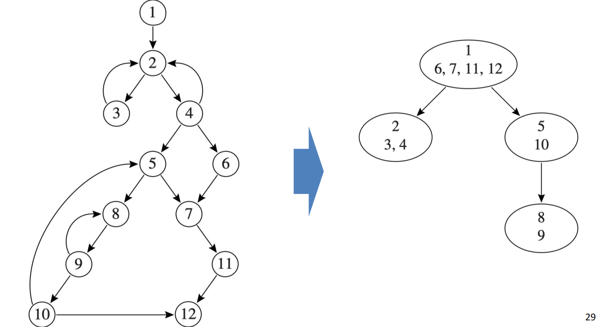
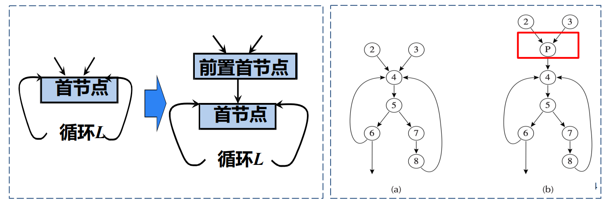

18 Loop Optimizations 循环优化¶
参考资料：
- 姚培森老师2024~2025学年春夏ch18ppt
- wcjj的笔记
- 伟大的Gemini 2.5 pro deep research
一个程序90%的执行时间，往往消耗在仅仅10%的代码上，而这关键的10%代码，绝大多数情况下都潜藏在程序的循环结构中，因此对循环进行优化是提升程序性能最关键、最有效的手段。
本章节我们关注两个问题：
- 如何精确地识别循环？
- 如何执行最基础且最有效的优化？- Loop Invariant Hoisting
1 Loops and Dominators 循环与支配¶
建立在CFG之上。
1.1 Loops定义¶
对循环严格的定义的核心思想是确保循环有一个唯一的入口。
一个控制流图中的循环是满足以下三个条件的结点集合\(S\)，其中包含一个特殊的“首结点”（header）\(h\)：
- 从\(S\)中的任何一个结点出发，都存在一条路径能够回到首结点\(h\)；
- 从首结点\(h\)出发，存在一条路径能够到达\(S\)中的任何一个结点；
- （核心）除了通往首结点\(h\)的边之外，不存在任何从\(S\)外部结点指向\(S\)内部结点的边 - 首结点是进入该循环的唯一入口。
如果我们遍历每一个节点都做不成\(h\)，那这个节点集合就不是Loop。
结构化控制流（Structured control-flow）：结构化的控制流只会产生可规约图，许多编译分析和循环优化技术都依赖于图是可规约的这一特性：
- 可规约图 (Reducible Graphs)：图中的所有圈（cycles）都符合上述对Loop的定义
- 大多数高级语言产生的是可规约图，例如Java只会产生可规约图
- 不可规约图 (Irreducible Graphs)：图中包含一些不符合上述对Loop定义的圈
- 它们可以由非结构化的控制流产生，例如使用了
goto语句的C/C++程序就可能产生不可规约图
- 它们可以由非结构化的控制流产生，例如使用了
1.2 寻找循环¶
1.2.1 支配节点¶
定义：
一个结点d支配（dominates）另一个结点n，当且仅当从程序的入口结点到结点n的每一条可能的执行路径都必须经过d。
- 每个结点都支配它自身
算法：
找出所有结点的支配者集合的算法。
数据流方程如下：

D[n]表示支配结点n的结点集合，pred[n]表示n的所有前驱结点集合。
执行流程：将入口结点s0的支配集设为{s0}。对于所有其他结点n，将其支配集D[n]初始化为一个包含所有结点的全集。反复遍历所有结点（除入口外），根据上述方程更新它们的支配集。每次更新都是取其所有前驱结点支配集的交集，再加上结点自身。直到到达不动点。
例子：

直接支配节点与支配树：
- 在结点
n的所有支配者中，存在一个“最接近”n的支配者，我们称之为n的直接支配结点（Immediate Dominator, idom）- 除了入口结点，每个结点都有且仅有一个直接支配结点
- 这种唯一的父子关系，使得我们可以将整个程序的支配关系组织成一棵支配树（Dominator Tree）
- 每个结点的父结点就是它的直接支配结点，而它的所有祖先结点就是它的所有支配者
- 在这棵树上，将判断
d是否支配n，简化成了树上祖先查询问题 - 例子： 
1.2.2 循环¶
回边（Back Edge）：一条从结点n指向结点h的边被称为回边，当且仅当h支配n（即h dom n）
每一个回边n -> h都唯一地定义了一个自然循环（Natural Loop），这个自然循环由两部分组成：
- 循环的首结点
h - 所有能够到达
n，并且路径上不经过h的结点集合
算法：
- 计算控制流图的支配关系
- 找出所有的回边
n -> h - 对于每一个回边，从
n开始，在反向的控制流图上进行遍历（但不能越过h），所有能被遍历到的结点，再加上h本身，就构成了这个回边所对应的自然循环
循环嵌套树：
- 一个首结点可能对应多个自然循环（如果有多条回边指向它），在这种情况下，编译器通常会将它们合并成一个更大的循环进行分析。
- 当一个自然循环的所有结点被完全包含在另一个自然循环内，且它们的的首结点不同时，我们就称之为嵌套循环（Nested Loop）。
- 不包含任何其他循环的循环被称为最内层循环（Innermost Loops），它们通常是优化的首要目标，因为它们的执行频率最高。
- 为了获得程序循环结构的全貌，编译器会构建一棵循环嵌套树（Loop-Nest Tree） 。这棵树的结点代表程序中的各个循环，父子关系表示循环的嵌套。树的根可以看作是整个函数体，而树的叶子结点则对应着最内层循环。这个宏观视图可以指导编译器按照从内到外的顺序，系统地进行循环优化。

构建算法：
- 构建支配结点树
- 通过分析图中的后向边来识别所有的自然循环，自然循环的入口点被称为循环首结点
- 为每个首结点合并自然循环
- 一个首结点
h可能有多条后向边指向它，从而形成多个自然循环,这一步要求将所有以同一个h为首结点的自然循环合并成一个大的循环，记为loop[h]
- 一个首结点
- 构建循环首结点的树
- 如果首结点
h2所在的循环完整地处在首结点h1的循环（即loop[h1]）内部，那么在嵌套树中，h1就在h2的上方（即h1是h2的父节点）
- 如果首结点
1.3 Loop Preheader¶

为循环创建一个前置首结点（Loop Preheader） ：
- 这是一个专门为优化而创建的新基本块，它的唯一后继是原循环的首结点。
- 所有原来指向循环首结点的边，现在都重定向到这个前置首结点。
- 这样一来，无论循环有多少个入口路径，编译器都有了一个唯一的、干净的“准备区”来插入优化代码，极大地简化了后续的变换操作。
2 Loop Invariant Hoisting 循环不变式上提¶
核心思想：将那些在每次循环中都计算出相同结果的“不变”代码，从循环体内移动到循环体外，只计算一次。
2.1 Loop Invariant 循环不变式¶
指的是一个在循环中结果始终不变的表达式。
一个形如x := v1 op v2的赋值语句是循环不变的，当且仅当它的所有操作数（v1, v2）满足以下条件之一：
- 操作数是常量
- 所有能到达该语句的操作数定义都来自于循环的外部
- 循环内部只有一个定义能到达该操作数，且该定义本身也是一个循环不变式
这个定义是递归的，因此我们要通过迭代不动点的方式找出所有不变式。
例子：
1 2 3 4 5 | |
i := i + 1：不是不变式，因为i在每次迭代中都会改变b := 7：是不变式，因为操作数7是一个常量t := a + b：假设a的定义在循环外，而b刚刚被我们确定为不变式，因此，t := a + b也是不变式*i := t：不是不变式，因为地址i在每次迭代中都在变化
2.2 不变式上提条件¶
- 支配条件 (Dominance Condition)：包含不变式赋值语句
d: t <- expr的基本块，必须支配所有在循环外使用变量t的循环出口 - 防止在某些执行路径上引入不必要的计算和错误的最终结果
- 唯一性条件 (Uniqueness Condition)：在循环中，被赋值的变量
t只能有这唯一一个定义 - 前置首结点条件 (Pre-header Condition)：被赋值的变量
t在循环的前置首结点处不能是活跃的（live-out）- 否则会在
t的旧值被使用之前，过早地将其覆盖，导致第一次迭代出错
- 否则会在
例子：